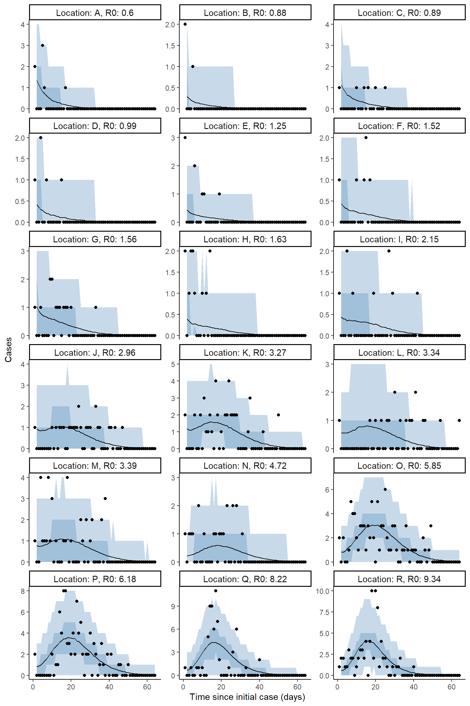
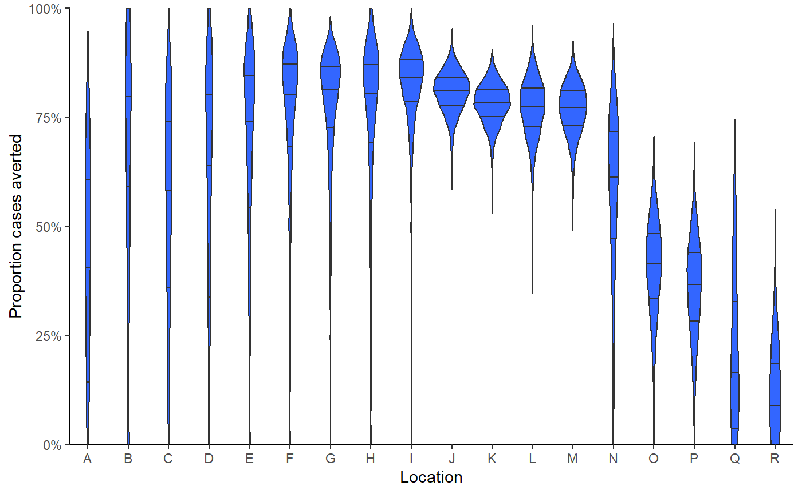

BC outbreak data fitting
BC_outbreak_data_fitting.RmdLoad long-term healthcare outbreak data
Data loaded includes number of cases since outbreak on a given day for each location, the number of outbreaks, the size of the facility, as well as the labels for the outbreaks.
n_outbreaks <- length(BC_LTHC_outbreaks_100Imputs[[1]]$capacity)
outbreak_sizes <- BC_LTHC_outbreaks_100Imputs[[1]]$capacity
outbreak_cases_series <- BC_LTHC_outbreaks_100Imputs[[1]]$time_series
ob_codes <- BC_LTHC_outbreaks_100Imputs[[1]]$Location
tmax <- 50
# create matrix for cases
# outbreak_cases <- matrix(nrow=tmax,ncol=n_outbreaks)
#
# for(i in 1:length(outbreak_cases_series)){
# # case number for outbreak i
# ob_cases <- outbreak_cases_series[[i]]
# # truncate at 50
# ob_cases <- ob_cases[1:min(tmax,length(ob_cases))]
# padded_ob_cases <- replace(rep(0,tmax), seq(from= 1, to = length(ob_cases)),
# ob_cases)
# outbreak_cases[,i] <- padded_ob_cases
# }
outbreak_cases <- BC_LTHC_outbreaks_100Imputs[[1]]$case_matrix
# plot cases from matrix
as_tibble(outbreak_cases,rownames="time") %>%
mutate(time = as.double(time)) %>%
pivot_longer(-time,names_to = "location",values_to="cases") %>%
ggplot(aes(x=time,y=cases,color=location)) +
geom_line() +
theme(legend.position = "none")
#> Warning: The `x` argument of `as_tibble.matrix()` must have unique column names if `.name_repair` is omitted as of tibble 2.0.0.
#> Using compatibility `.name_repair`.
#> This warning is displayed once every 8 hours.
#> Call `lifecycle::last_warnings()` to see where this warning was generated.
Fit model
Fit model including estimating intervention. This code chunk is not run in the vignette, but provides the syntax for how to produce posterior samples. The bc_fit data object is including in the package.
bc_fit <- seir_model_fit(tmax,n_outbreaks,outbreak_cases,outbreak_sizes,
intervention_switch = TRUE,
multilevel_intervention = FALSE)Model diagnositc checking

rstan::check_hmc_diagnostics(bc_fit$model)
#>
#> Divergences:
#> 0 of 1200 iterations ended with a divergence.
#>
#> Tree depth:
#> 0 of 1200 iterations saturated the maximum tree depth of 10.
#>
#> Energy:
#> E-BFMI indicated no pathological behavior.
# print(mod)
traceplot(bc_fit$model, pars = c("params[1]", "params[2]"), inc_warmup = TRUE, nrow = 2)
rhats <- bayesplot::rhat(bc_fit$model)
rhats[rhats>1.03]
#> <NA> <NA> <NA> <NA> <NA> <NA> <NA> <NA> <NA> <NA> <NA> <NA> <NA> <NA> <NA> <NA>
#> NA NA NA NA NA NA NA NA NA NA NA NA NA NA NA NA
#> <NA> <NA> <NA> <NA> <NA> <NA> <NA> <NA> <NA> <NA> <NA> <NA> <NA> <NA> <NA> <NA>
#> NA NA NA NA NA NA NA NA NA NA NA NA NA NA NA NA
#> <NA> <NA> <NA> <NA> <NA> <NA> <NA> <NA>
#> NA NA NA NA NA NA NA NA
bayesplot::mcmc_rhat(rhats)
#> Warning: Dropped 40 NAs from 'new_rhat(rhat)'.
bayesplot::mcmc_nuts_divergence(bayesplot::nuts_params(bc_fit$model),
bayesplot::log_posterior(bc_fit$model))
Plot model output
# Extract the posterior samples to a structured list:
posts <- rstan::extract(bc_fit$model)
extracted_posts <- hom_extract_posterior_draws(posts) # get object of incidence and zeta
#> Warning: Problem with `mutate()` input `rincidence`.
#> i NAs produced
#> i Input `rincidence` is `rpois(dplyr::n(), incidence)`.
#> Warning in rpois(dplyr::n(), incidence): NAs produced
result <- hom_plot_r0_by_location(extracted_posts=extracted_posts)
#> Warning: Ignoring unknown parameters: fun.y
# plot results
show(result$plot + labs(y=TeX("$R_{0,k}$")))
#> No summary function supplied, defaulting to `mean_se()`
result$table %>%
kableExtra::kbl() %>%
kableExtra::kable_styling(bootstrap_options=bootstrap_options)| location | r0 |
|---|---|
| Total | 2.19 (0.19 - 6.69) |
| 11 | 9.04 (7.19 - 11.86) |
| 1 | 9.1 (5.79 - 12.03) |
| 17 | 5.78 (4.47 - 7.86) |
| 5 | 5.66 (4.32 - 7.95) |
| 8 | 4.4 (2.99 - 6.79) |
| 13 | 3.12 (2.31 - 4.46) |
| 10 | 3.09 (2.34 - 4.41) |
| 4 | 2.95 (2.17 - 4.2) |
| 3 | 2.78 (2.09 - 3.94) |
| 2 | 2.02 (1.23 - 3.09) |
| 12 | 1.72 (0.87 - 2.82) |
| 18 | 1.45 (0.74 - 2.39) |
| 15 | 1.46 (0.85 - 2.25) |
| 16 | 1.39 (0.63 - 2.37) |
| 7 | 0.89 (0.28 - 1.88) |
| 14 | 0.82 (0.33 - 1.48) |
| 9 | 0.75 (0.22 - 1.75) |
| 6 | 0.53 (0.16 - 1.13) |
Plot model fit to incidence
extracted_posts <- hom_extract_posterior_draws(posts) # get object of incidence and r0
#> Warning: Problem with `mutate()` input `rincidence`.
#> i NAs produced
#> i Input `rincidence` is `rpois(dplyr::n(), incidence)`.
#> Warning in rpois(dplyr::n(), incidence): NAs produced
result <- hom_plot_incidence_by_location(extracted_posts=extracted_posts,
outbreak_cases = outbreak_cases)
# plot results
result$plot
#> Warning: Removed 18 row(s) containing missing values (geom_path).
Plot counterfactual scenario
The code below extracts and plots the counterfactual scenario and also provides a summary table of cases by location in the baseline, scenario, where there was no intervention and the difference and proportional difference representing the cases averted. The final row provides a total summary of cases.
result <- hom_plot_counterfactual_by_location(bc_fit,
outbreak_cases = outbreak_cases)
# plot results
show(result$plot)
# show table of results
result$table %>%
kableExtra::kable() %>%
kableExtra::kable_styling(bootstrap_options = c("striped","responsive"))| location | baseline | counterfactual | averted | proportion_averted |
|---|---|---|---|---|
| 1 | 97 (69 - 119) | 110 (87 - 143) | 11 (-17 - 67) | 0.1 (-0.18 - 0.49) |
| 10 | 46 (33 - 62.05) | 200 (154 - 239) | 152.5 (110 - 188) | 0.76 (0.68 - 0.83) |
| 11 | 81 (62 - 101) | 88 (71 - 110) | 8 (-14 - 32) | 0.09 (-0.18 - 0.31) |
| 12 | 6 (2 - 13) | 28 (7 - 61) | 21 (2 - 53) | 0.78 (0.29 - 0.92) |
| 13 | 32 (20 - 44) | 131 (98 - 159) | 98 (69 - 129) | 0.76 (0.64 - 0.85) |
| 14 | 10 (5 - 18) | 20 (8 - 53.05) | 10 (-2 - 42) | 0.5 (-0.2 - 0.82) |
| 15 | 14 (7 - 23.05) | 50 (19 - 120) | 36 (7 - 102.05) | 0.72 (0.33 - 0.88) |
| 16 | 6 (2 - 12) | 20 (5 - 59) | 13.5 (0 - 50.05) | 0.71 (0 - 0.9) |
| 17 | 91 (71 - 114.05) | 148 (122.95 - 173) | 56 (22 - 90) | 0.38 (0.17 - 0.54) |
| 18 | 6 (2 - 12) | 21 (6 - 57) | 15 (1 - 47) | 0.74 (0.14 - 0.91) |
| 2 | 9 (4 - 17) | 44 (16.95 - 77) | 34 (10 - 65) | 0.79 (0.53 - 0.91) |
| 3 | 31 (20 - 45) | 145 (99.95 - 181) | 113 (73 - 149) | 0.78 (0.67 - 0.86) |
| 4 | 21 (12 - 32) | 92 (64 - 119) | 71 (45.95 - 97) | 0.78 (0.65 - 0.86) |
| 5 | 85 (65 - 109.05) | 140 (115.95 - 167.05) | 56 (21 - 88) | 0.4 (0.17 - 0.55) |
| 6 | 11 (5 - 17) | 15 (7 - 37) | 5 (-4 - 25) | 0.33 (-0.5 - 0.75) |
| 7 | 4 (1 - 9) | 8 (2 - 34) | 4 (-2 - 27) | 0.56 (-1 - 0.91) |
| 8 | 16 (8 - 27) | 41 (24 - 60) | 25 (5 - 44) | 0.61 (0.19 - 0.81) |
| 9 | 3 (0 - 6) | 5 (1 - 22) | 3 (-2 - 18) | 0.55 (-2.7 - 1) |
| total | 574 (516 - 630) | 1328 (1115 - 1583.15) | 754.5 (530.95 - 1033) | 0.57 (0.47 - 0.66) |
Fit hierarcichal intervention model
Fit model including estimating intervention by each location in a hierarchical design,
bc_fit_zeta <- seir_model_fit(tmax,n_outbreaks,outbreak_cases,outbreak_sizes,
intervention_switch = TRUE,
multilevel_intervention = TRUE)Plot model output - zeta model
# Extract the posterior samples to a structured list:
posts <- rstan::extract(bc_fit_zeta$model)
extracted_posts <- hom_extract_posterior_draws(posts) # get object of incidence and zeta
#> Warning: Problem with `mutate()` input `rincidence`.
#> i NAs produced
#> i Input `rincidence` is `rpois(dplyr::n(), incidence)`.
#> Warning in rpois(dplyr::n(), incidence): NAs produced
result <- hom_plot_r0_by_location(extracted_posts=extracted_posts)
#> Warning: Ignoring unknown parameters: fun.y
# plot results
show(result$plot + labs(y=TeX("$R_{0,k}$")))
#> No summary function supplied, defaulting to `mean_se()`
result$table %>%
kableExtra::kbl() %>%
kableExtra::kable_styling(bootstrap_options=bootstrap_options)| location | r0 |
|---|---|
| Total | 2.86 (0.35 - 7.97) |
| 1 | 10.18 (7.66 - 13.61) |
| 11 | 9.24 (6.98 - 12.81) |
| 5 | 6.8 (5.07 - 9.27) |
| 8 | 6.51 (4.01 - 10.47) |
| 17 | 6.42 (4.84 - 8.37) |
| 12 | 5.33 (2.26 - 9.97) |
| 13 | 4.64 (2.98 - 7.27) |
| 18 | 4.09 (1.88 - 7.78) |
| 10 | 3.91 (2.68 - 5.69) |
| 16 | 3.54 (1.66 - 6.79) |
| 15 | 3.53 (1.83 - 6.6) |
| 7 | 3.1 (1.36 - 6.68) |
| 9 | 2.78 (1.21 - 5.75) |
| 2 | 2.63 (1.46 - 5) |
| 14 | 2.55 (1.15 - 4.81) |
| 6 | 2.45 (0.92 - 5.07) |
| 3 | 2.51 (1.63 - 3.76) |
| 4 | 2.35 (1.52 - 3.5) |
Plot hierarchical intervention strength by location (zeta)
result <- hom_plot_zeta_by_location(extracted_posts=extracted_posts)
#> Warning: Ignoring unknown parameters: fun.y
# plot results
show(result$plot)
#> No summary function supplied, defaulting to `mean_se()`
result$table %>%
kableExtra::kbl() %>%
kableExtra::kable_styling(bootstrap_options=bootstrap_options)| location | zeta |
|---|---|
| Total | 0.09 (0.03 - 0.31) |
| 6 | 0.26 (0.12 - 0.51) |
| 9 | 0.21 (0.09 - 0.43) |
| 7 | 0.2 (0.08 - 0.39) |
| 12 | 0.18 (0.09 - 0.32) |
| 14 | 0.16 (0.07 - 0.32) |
| 18 | 0.16 (0.08 - 0.29) |
| 16 | 0.14 (0.07 - 0.27) |
| 15 | 0.13 (0.07 - 0.23) |
| 1 | 0.11 (0.08 - 0.14) |
| 8 | 0.09 (0.05 - 0.12) |
| 13 | 0.08 (0.05 - 0.12) |
| 2 | 0.07 (0.03 - 0.13) |
| 10 | 0.07 (0.04 - 0.09) |
| 5 | 0.06 (0.05 - 0.08) |
| 17 | 0.06 (0.04 - 0.07) |
| 3 | 0.04 (0.02 - 0.06) |
| 11 | 0.03 (0.01 - 0.09) |
| 4 | 0.03 (0.01 - 0.05) |
Plot model fit to incidence - zeta model
extracted_posts <- hom_extract_posterior_draws(posts) # get object of incidence and r0
#> Warning: Problem with `mutate()` input `rincidence`.
#> i NAs produced
#> i Input `rincidence` is `rpois(dplyr::n(), incidence)`.
#> Warning in rpois(dplyr::n(), incidence): NAs produced
result <- hom_plot_incidence_by_location(extracted_posts=extracted_posts,
outbreak_cases = outbreak_cases)
# plot results
result$plot
#> Warning: Removed 18 row(s) containing missing values (geom_path).
Plot counterfactual scenario - zeta model
The code below extracts and plots the counterfactual scenario and also provides a summary table of cases by location in the baseline, scenario, where there was no intervention and the difference and proportional difference representing the cases averted. The final row provides a total summary of cases.
result <- hom_plot_counterfactual_by_location(bc_fit_zeta,
outbreak_cases = outbreak_cases)
# plot results
show(result$plot)
# show table of results
result$table %>%
kableExtra::kable() %>%
kableExtra::kable_styling(bootstrap_options = c("striped","responsive"))| location | baseline | counterfactual | averted | proportion_averted |
|---|---|---|---|---|
| 1 | 67 (50 - 91) | 136 (107.95 - 162.05) | 69 (28 - 101.05) | 0.51 (0.24 - 0.66) |
| 10 | 46 (32 - 62) | 215 (166 - 248) | 168 (121 - 202) | 0.78 (0.69 - 0.85) |
| 11 | 82 (63 - 102) | 86 (68 - 106) | 3 (-18 - 28) | 0.04 (-0.23 - 0.28) |
| 12 | 7 (2 - 14) | 73 (41 - 97) | 66 (35 - 90) | 0.91 (0.8 - 0.97) |
| 13 | 32 (20.95 - 47) | 146 (118 - 175) | 114 (84 - 143.05) | 0.78 (0.67 - 0.86) |
| 14 | 10 (5 - 18) | 155.5 (31 - 233) | 144 (19 - 223.05) | 0.93 (0.66 - 0.97) |
| 15 | 15 (8 - 25) | 183 (78.95 - 224) | 166 (64 - 208) | 0.91 (0.8 - 0.96) |
| 16 | 6 (2 - 12) | 77 (26 - 104.05) | 70 (21.95 - 97) | 0.92 (0.77 - 0.97) |
| 17 | 93 (71 - 118) | 147 (121 - 174) | 54 (17 - 88.05) | 0.37 (0.13 - 0.53) |
| 18 | 6 (2 - 13) | 79 (34 - 107) | 73 (28 - 99) | 0.92 (0.81 - 0.97) |
| 2 | 9 (4 - 17) | 60 (19 - 97) | 51 (12 - 86.05) | 0.84 (0.55 - 0.93) |
| 3 | 29 (19 - 42) | 122 (54.95 - 175) | 91 (28 - 145) | 0.75 (0.5 - 0.85) |
| 4 | 20 (12 - 32) | 66 (28 - 107) | 46 (9 - 85) | 0.69 (0.28 - 0.84) |
| 5 | 84 (64 - 105.05) | 142 (118 - 170) | 59 (25.95 - 93) | 0.41 (0.2 - 0.57) |
| 6 | 10 (4.95 - 18) | 186 (26.95 - 298.05) | 176 (16 - 288) | 0.94 (0.62 - 0.98) |
| 7 | 4 (1 - 9) | 68 (15 - 99) | 64 (12 - 95) | 0.94 (0.74 - 0.99) |
| 8 | 16 (8 - 25.05) | 44 (26 - 63) | 28 (8 - 48) | 0.64 (0.27 - 0.83) |
| 9 | 3 (0 - 6) | 44 (9 - 73) | 41.5 (7 - 70) | 0.94 (0.68 - 1) |
| total | 546 (495 - 604) | 2014 (1506 - 2346.05) | 1463 (952 - 1812.05) | 0.73 (0.63 - 0.78) |
Create parameter comparison table
res <- create_pub_tables("Fixed intervention"= bc_fit,
"Multiple intervention" = bc_fit_zeta)
res %>%
kableExtra::kable() %>%
kableExtra::kable_styling(bootstrap_options = "striped")| location | r0 Fixed intervention | zeta Fixed intervention | critical_time Fixed intervention | r0 Multiple intervention | zeta Multiple intervention | critical_time Multiple intervention |
|---|---|---|---|---|---|---|
| 18 | 1.45 (0.74 - 2.39) | 0.4 (0.06 - 2.14) | 0.69 (0 - 7.38) | 4.09 (1.88 - 7.78) | 0.16 (0.08 - 0.29) | 8.63 (4.39 - 13.26) |
| 17 | 5.78 (4.47 - 7.86) | 0.38 (0.07 - 2.19) | 4.64 (0.78 - 26.25) | 6.42 (4.84 - 8.37) | 0.06 (0.04 - 0.07) | 33.09 (27.45 - 44.15) |
| 16 | 1.39 (0.63 - 2.37) | 0.41 (0.07 - 2.12) | 0.54 (0 - 6.45) | 3.54 (1.66 - 6.79) | 0.14 (0.07 - 0.27) | 8.56 (3.99 - 13.49) |
| 15 | 1.46 (0.85 - 2.25) | 0.42 (0.07 - 2.15) | 0.73 (0 - 6.72) | 3.53 (1.83 - 6.6) | 0.13 (0.07 - 0.23) | 9.17 (5.84 - 12.83) |
| 14 | 0.82 (0.33 - 1.48) | 0.42 (0.07 - 2.28) | 0 (0 - 1.59) | 2.55 (1.15 - 4.81) | 0.16 (0.07 - 0.32) | 5.48 (1.26 - 9.14) |
| 13 | 3.12 (2.31 - 4.46) | 0.36 (0.06 - 1.99) | 3.21 (0.54 - 18.08) | 4.64 (2.98 - 7.27) | 0.08 (0.05 - 0.12) | 19.23 (15.39 - 23.77) |
| 12 | 1.72 (0.87 - 2.82) | 0.4 (0.07 - 2) | 1.04 (0 - 9.25) | 5.33 (2.26 - 9.97) | 0.18 (0.09 - 0.32) | 9.13 (5.25 - 13.86) |
| 11 | 9.04 (7.19 - 11.86) | 0.44 (0.07 - 1.9) | 5.11 (1.15 - 31.64) | 9.24 (6.98 - 12.81) | 0.03 (0.01 - 0.09) | 66.66 (28.14 - 266.61) |
| 10 | 3.09 (2.34 - 4.41) | 0.39 (0.07 - 2.32) | 2.87 (0.45 - 16.6) | 3.91 (2.68 - 5.69) | 0.07 (0.04 - 0.09) | 20.54 (17.03 - 24.68) |
| 9 | 0.75 (0.22 - 1.75) | 0.36 (0.07 - 2.26) | 0 (0 - 2.91) | 2.78 (1.21 - 5.75) | 0.21 (0.09 - 0.43) | 4.73 (0.97 - 9.81) |
| 8 | 4.4 (2.99 - 6.79) | 0.41 (0.06 - 2.17) | 3.63 (0.7 - 23.14) | 6.51 (4.01 - 10.47) | 0.09 (0.05 - 0.12) | 21.91 (16.91 - 32.44) |
| 7 | 0.89 (0.28 - 1.88) | 0.4 (0.06 - 2.06) | 0 (0 - 2.92) | 3.1 (1.36 - 6.68) | 0.2 (0.08 - 0.39) | 5.61 (1.85 - 10.53) |
| 6 | 0.53 (0.16 - 1.13) | 0.39 (0.06 - 2.04) | 0 (0 - 0.31) | 2.45 (0.92 - 5.07) | 0.26 (0.12 - 0.51) | 3.26 (0 - 5.83) |
| 5 | 5.66 (4.32 - 7.95) | 0.41 (0.06 - 1.93) | 4.23 (0.92 - 26.97) | 6.8 (5.07 - 9.27) | 0.06 (0.05 - 0.08) | 29.72 (25.19 - 35.84) |
| 4 | 2.95 (2.17 - 4.2) | 0.38 (0.07 - 2.17) | 2.83 (0.48 - 16.18) | 2.35 (1.52 - 3.5) | 0.03 (0.01 - 0.05) | 27.68 (19.37 - 46.75) |
| 3 | 2.78 (2.09 - 3.94) | 0.41 (0.07 - 2.18) | 2.55 (0.44 - 15.06) | 2.51 (1.63 - 3.76) | 0.04 (0.02 - 0.06) | 23.03 (17.62 - 31.28) |
| 2 | 2.02 (1.23 - 3.09) | 0.4 (0.07 - 2.07) | 1.67 (0.2 - 11.15) | 2.63 (1.46 - 5) | 0.07 (0.03 - 0.13) | 14.58 (8.16 - 22.96) |
| 1 | 9.1 (5.79 - 12.03) | 0.43 (0.07 - 2.19) | 5.12 (1 - 31.01) | 10.18 (7.66 - 13.61) | 0.11 (0.08 - 0.14) | 20.32 (17.35 - 25.84) |
| Total | 0.33 (0.03 - 0.89) | 0.4 (0.07 - 2.15) | NA (NA - NA) | 1.78 (0.62 - 2.86) | 0.09 (0.03 - 0.31) | NA (NA - NA) |